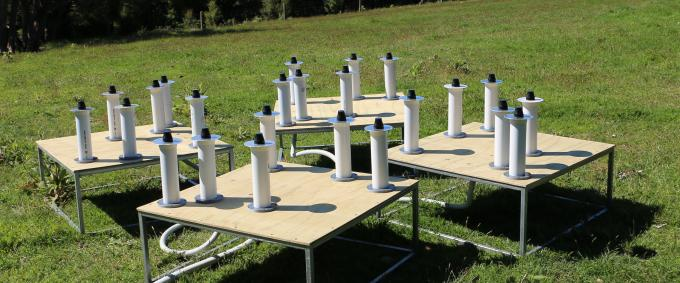

HARDWARE ABERTO
TART
TART (Transient Array Radio Telescope), radiotelescópio aberto e reproduzível, com instalações educacionais em diferentes países.
→
TART (Transient Array Radio Telescope), radiotelescópio aberto e reproduzível, com instalações educacionais em diferentes países.
→Goldstone Apple Valley Radio Telescope, programa educacional que permite a estudantes operar remotamente um radiotelescópio e participar de observações científicas.
→
ROSIE (Radio Observations of the Sun with Innovative Equipment), instrumento de radioastronomia solar com dados observacionais abertos para exploração e atividades educacionais.
→Selecione os pontos no mapa para conhecer as iniciativas catalogadas.